Manual de usuario
Shoe Cleaning · Lavandería de zapatos y accesorios
App: shoecleaning.consultecapps.com · Versión del 22 de noviembre de 2026
La app funciona en el celular, la tablet o la computadora, con Chrome, Edge, Safari o Firefox. Cada persona entra con su propio usuario y ve solo lo que necesita para su trabajo:
| Rol | Qué hace |
|---|---|
| Recepción | Recibe pedidos con foto de cada par, aplica promociones y descuentos, pasa los pedidos a producción, los marca listos, cobra, entrega, registra gastos e insumos y hace el cierre de caja. |
| Administración | Todo lo anterior, más el tablero en vivo, gastos del mes, inventario, promociones, usuarios, precios, reportes y respaldos. |
Contenido
1. Entrar a la app
2. Registrar un pedido, promociones y descuentos
3. Entregar y cobrar
4. Gastos del día
5. Cierre de caja y resumen
6. Taller: producción y listo
7. Administración
8. Trabajar sin internet
9. Preguntas frecuentes
1. Entrar a la app
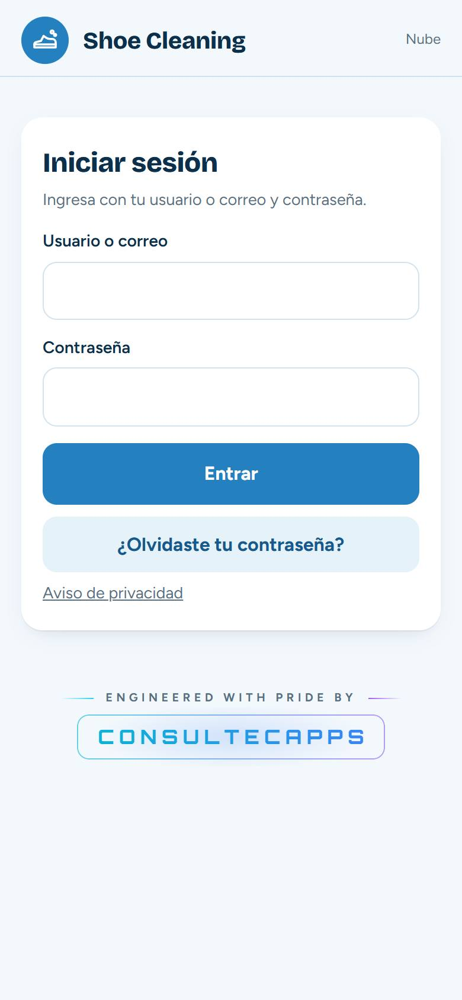
- Abre shoecleaning.consultecapps.com.
- Escribe tu usuario (recepción) o tu correo (administración) y tu contraseña.
- Toca Entrar.
2. Registrar un pedido, promociones y descuentos
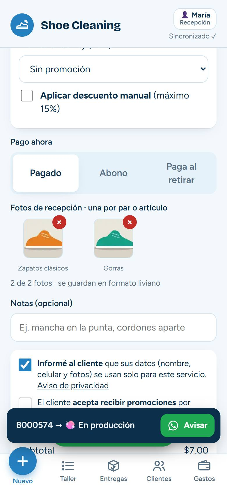
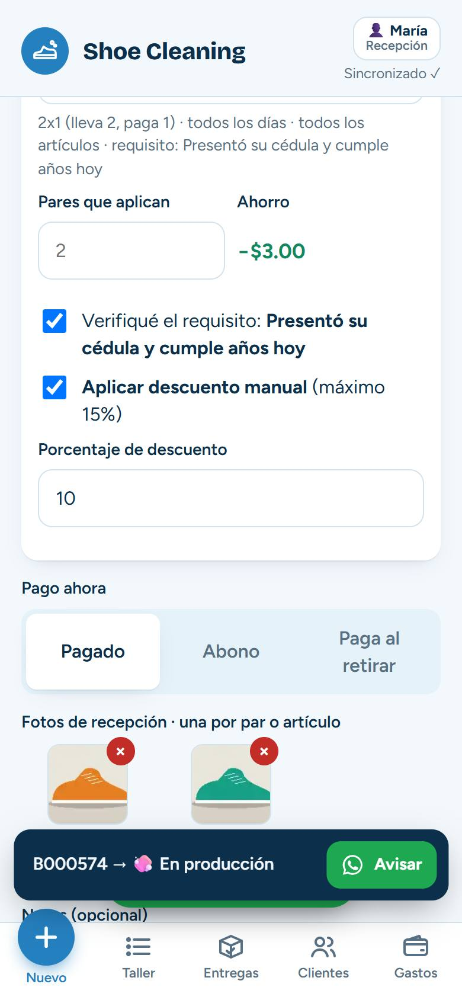
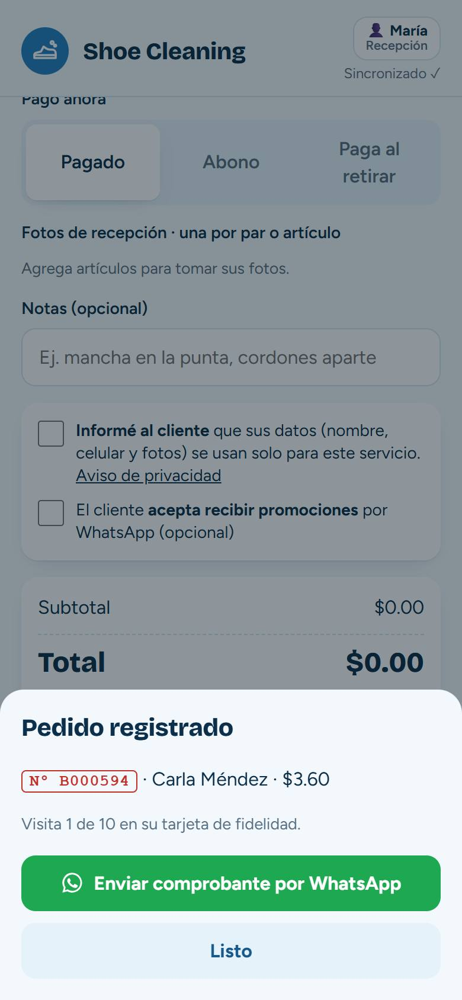
- Toca Nuevo (el botón redondo +).
- Escribe el teléfono. Si el cliente ya vino antes, la app completa su nombre y muestra su tarjeta de fidelidad.
- Con + y − indica cuántos pares o artículos deja de cada tipo. Puedes cambiar el precio si hace falta.
- Fotos: aparece un espacio 📷 por cada par o artículo (por ejemplo «Zapatos clásicos 1», «Zapatos clásicos 2»). Toca cada uno y toma la foto de cómo llega. Si te equivocas, toca la × y tómala de nuevo.
- Descuentos: en Promoción de hoy aparecen solo las promociones del día (por ejemplo «Miércoles de negro»). Indica cuántos pares aplican y, si la promoción tiene requisito (como presentar la cédula), marca que lo verificaste. Si además corresponde, marca Aplicar descuento manual y escribe el porcentaje (máximo 15%). El total se actualiza solo.
- Elige la fecha de entrega y el pago: Pagado, Abono o Paga al retirar.
- Marca Informé al cliente (obligatorio por la ley de datos) y, si acepta, promociones.
- Toca Registrar pedido y envía el comprobante por WhatsApp.
3. Entregar y cobrar
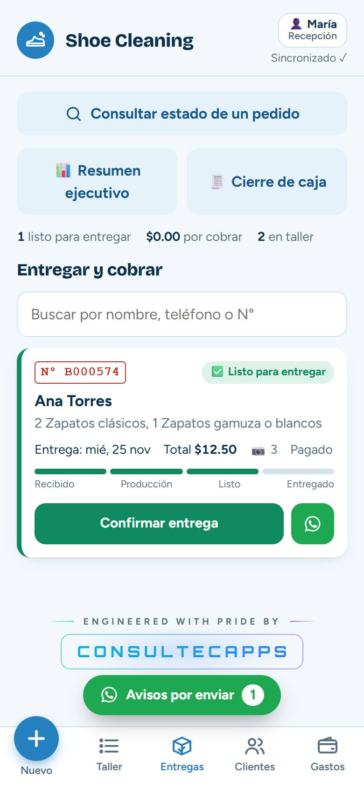
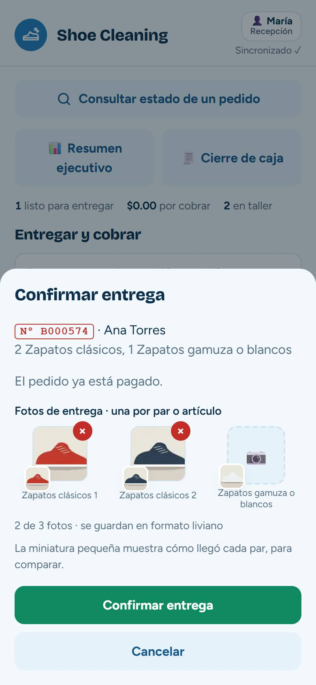
- En Entregas aparecen los pedidos marcados como listos en el Taller. Busca por nombre, teléfono o número.
- Toca Entregar. Si hay saldo, elige Efectivo o Transferencia.
- Toma la foto de entrega de cada par. La miniatura pequeña en la esquina muestra cómo llegó, para comparar delante del cliente.
- Toca Confirmar entrega y envía el agradecimiento por WhatsApp.
4. Gastos del día
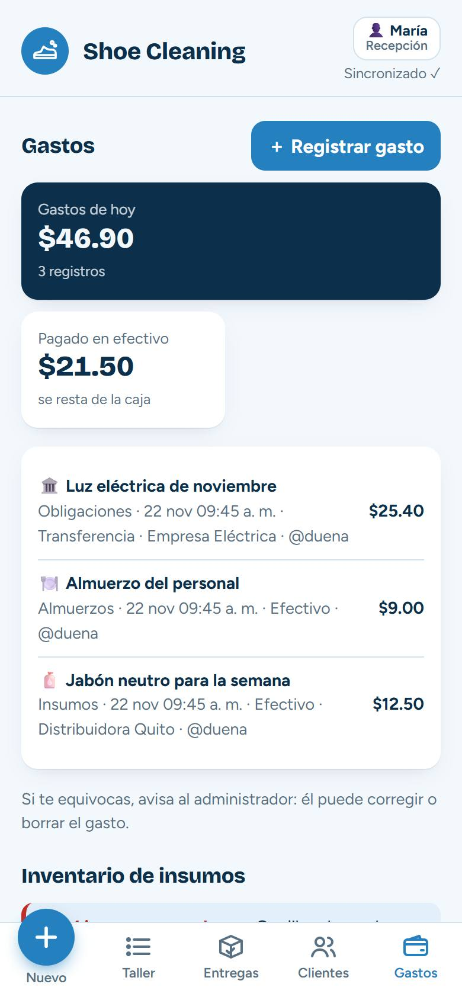
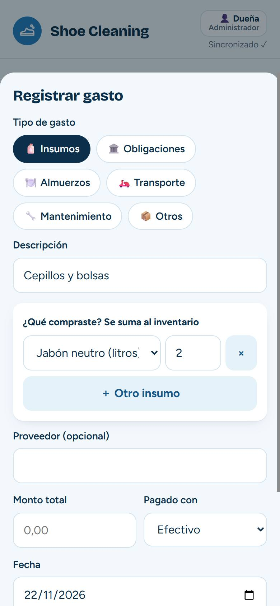
- Toca Gastos → ＋ Registrar gasto.
- Elige el tipo: Insumos, Obligaciones (arriendo, luz, agua, internet, impuestos, sueldos), Almuerzos, Transporte, Mantenimiento u Otros.
- Escribe qué se pagó, el monto y si fue en efectivo o transferencia.
- Si compraste insumos, elige cuáles y la cantidad: se suman solos al inventario.
- Toca Guardar gasto.
5. Cierre de caja y resumen ejecutivo
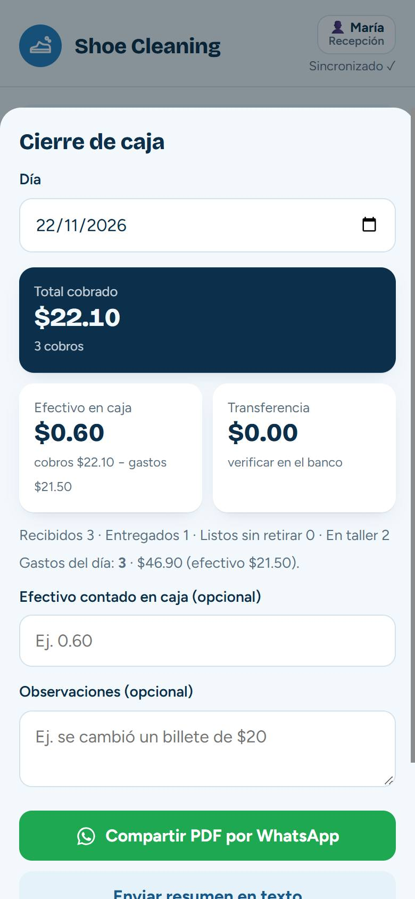
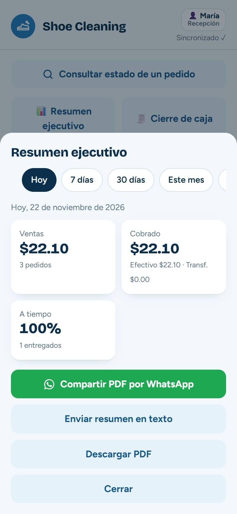
Al final del día, en Entregas:
- Toca 🧾 Cierre de caja. Verás lo cobrado, las transferencias y el efectivo que debe haber (cobros en efectivo menos gastos en efectivo).
- Cuenta el dinero y escríbelo en Efectivo contado: la app te dice si cuadra, si hay sobrante o faltante.
- Toca Compartir PDF por WhatsApp para enviarlo al dueño, o Descargar PDF.
📊 Resumen ejecutivo: ventas, cobros, clientes, cumplimiento de entregas y servicios más vendidos de hoy, 7 días, 30 días o el mes. Se comparte en PDF o texto.
6. Taller: producción y listo
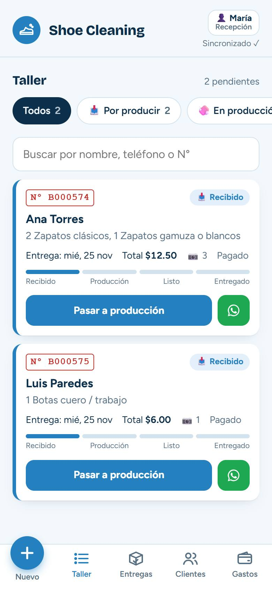
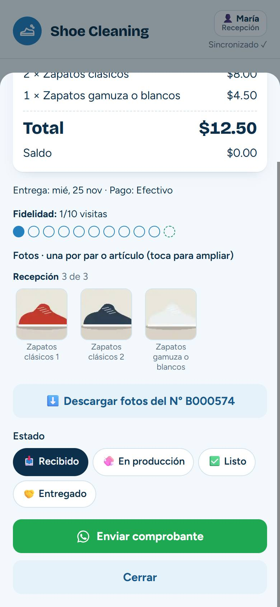
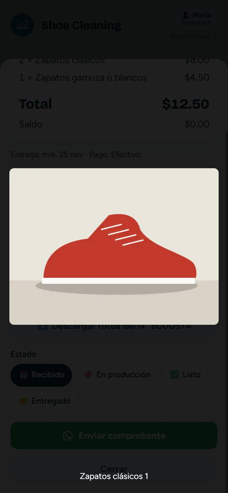
Recepción y administración llevan el trabajo del taller. Cada pedido pasa por Recibido → En producción → Listo → Entregado.
- Toca Taller. Están los pedidos por producir y en producción, ordenados por fecha de entrega. 🚩 marca los que se entregan hoy o mañana y ⚠️ los atrasados.
- Cuando empiecen a trabajar un pedido, toca Pasar a producción.
- Cuando esté terminado, toca Marcar como listo y avisa al cliente por WhatsApp. El pedido pasa a Entregas.
- Toca un pedido para ver sus fotos en miniatura (una por par); toca una para verla en grande y revisarla a fondo. Con ⬇️ Descargar fotos guardas todas las fotos de ese ticket en un archivo.
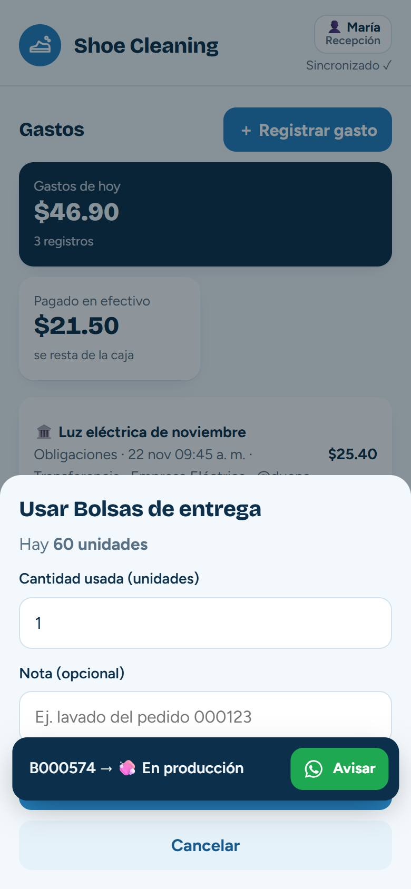
Insumos: cuando abras un frasco o uses material, ve a Gastos → Inventario de insumos → Usar, escribe la cantidad y toca Registrar uso. Los insumos en rojo están por acabarse.
7. Administración
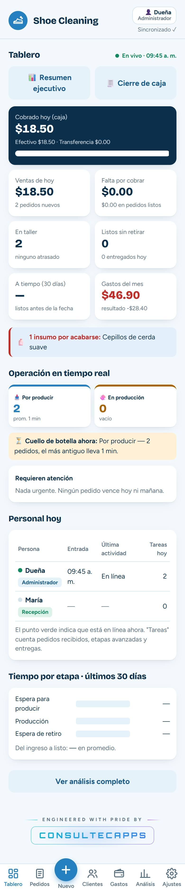
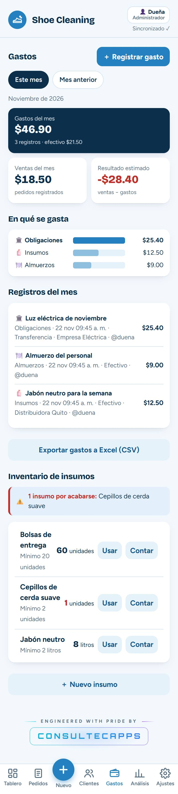
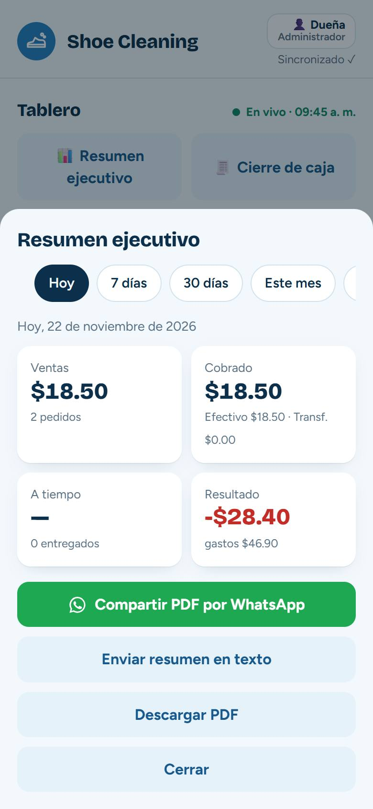
Tablero
Caja del día, ventas, lo que falta cobrar, pedidos en cada etapa, cuello de botella, personal en línea, tiempos por etapa, gastos del mes y aviso de insumos por acabarse. Se actualiza solo.
Gastos e inventario
- En Gastos ves el mes actual o el anterior: total, ventas, resultado estimado (ventas − gastos), en qué se gasta y cada registro. Toca un gasto para verlo o borrarlo. Puedes exportarlos a Excel.
- ＋ Nuevo insumo: nombre (por ejemplo «Jabón neutro»), unidad (litros, frascos, unidades), cuánto hay y con cuánto avisar.
- Contar: cada cierto tiempo cuenta lo que hay en bodega y escríbelo; el stock queda corregido y el movimiento queda registrado.
Promociones
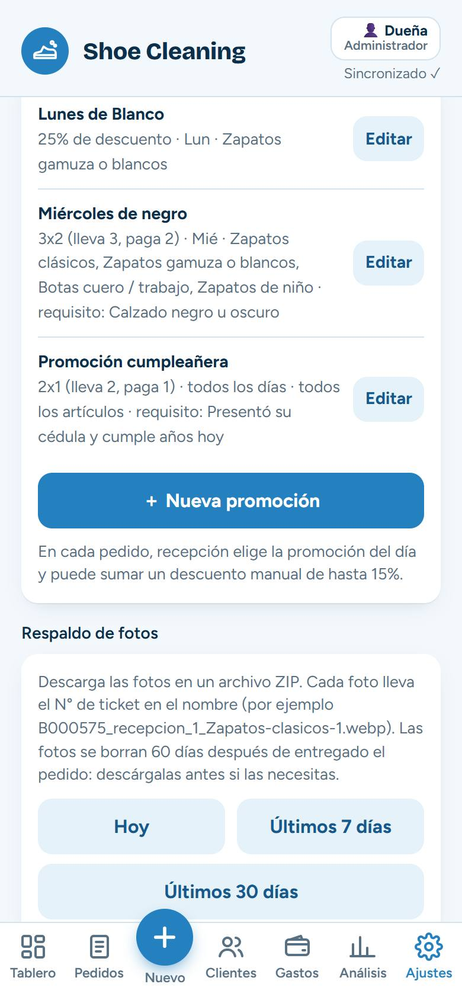
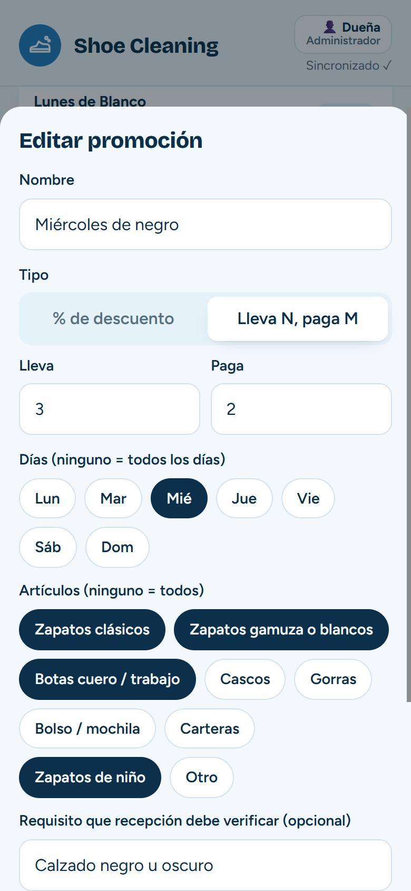
- En Ajustes → Promociones toca ＋ Nueva promoción o Editar.
- Elige el tipo: % de descuento (por ejemplo 25% los lunes en zapatos blancos) o Lleva N, paga M (por ejemplo 3x2 o 2x1).
- Marca los días (ninguno = todos los días) y los artículos a los que aplica (ninguno = todos). Si hace falta, escribe el requisito que recepción debe verificar (por ejemplo «Presentar cédula»).
- Desmarca Promoción activa para pausarla sin borrarla. Vienen tres de ejemplo: Lunes de Blanco, Miércoles de negro y Promoción cumpleañera.
Usuarios
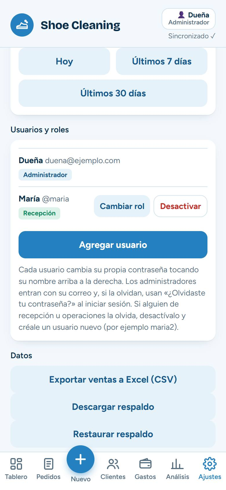
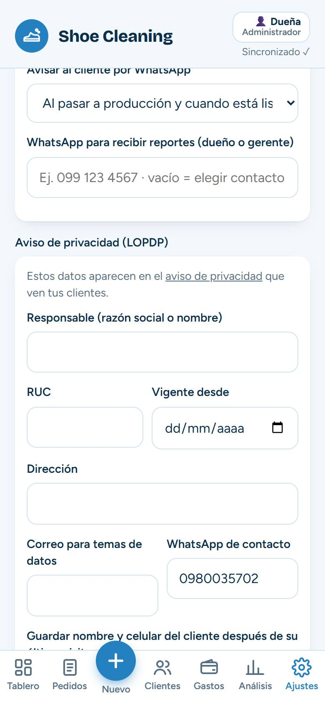
- Ajustes → Agregar usuario: elige el rol. Para recepción pones usuario y contraseña (mínimo 8 caracteres). Para otro administrador escribes su correo: le llega un enlace para crear su propia contraseña.
- Cambiar rol o Desactivar junto a cada persona. Siempre queda al menos un administrador.
Ajustes y respaldos
- Precios de cada servicio, fidelización (visitas y descuento), horario, días de entrega y WhatsApp para reportes.
- Aviso de privacidad: completa razón social, RUC, dirección, correo y años que se guardan los datos (se recomiendan 2). Aparecen en la página del aviso que ven los clientes.
- Respaldo de fotos: en Ajustes descarga en un archivo ZIP las fotos de hoy, de los últimos 7 o 30 días. Cada foto lleva el número de ticket en el nombre (por ejemplo B000575_recepcion_1_Zapatos-clasicos-1.webp). Las fotos se borran 60 días después de entregado el pedido: descárgalas antes si las necesitas.
- Descargar respaldo una vez por semana y guárdalo fuera del celular (Drive o correo). Exportar ventas a Excel cuando lo necesite el contador.
8. Trabajar sin internet
La app está hecha para seguir trabajando en la tablet aunque se corte el internet:
- Abre sin internet y con la sesión iniciada (la primera vez sí necesitas internet para entrar).
- Puedes registrar pedidos con sus fotos, pasarlos a producción, marcarlos listos, entregar y registrar gastos. Todo se guarda en la memoria de la tablet.
- Arriba a la derecha verás «Sin internet · guardado en este equipo». Cuando vuelve la conexión, todo se sube solo y dice «Sincronizado ✓».
- Los números de ticket siguen en orden: la tablet guarda números reservados para usarlos sin internet.
- No cierres sesión sin internet: la app no te deja si hay datos sin subir, para que no se pierdan.
9. Preguntas frecuentes
| Pregunta | Respuesta |
|---|---|
| ¿Funciona sin internet? | Sí, ver la sección 8. Lo que registres se guarda en la tablet y se sube solo cuando vuelve la conexión. |
| ¿Puedo dar más de 15% de descuento? | No con el descuento manual. Para un descuento mayor, el administrador crea una promoción en Ajustes. |
| ¿Cuánto espacio ocupan las fotos? | Muy poco: cada foto se comprime a unos 40 KB y su miniatura a unos 6 KB. Se borran solas 60 días después de entregado el pedido. |
| El efectivo de caja sale negativo | Los gastos en efectivo fueron más que lo cobrado en efectivo (se pagaron con el fondo de caja). Anótalo en observaciones del cierre. |
| Un insumo tiene un stock que no es real | El administrador toca Contar y escribe la cantidad real. |
| Un cliente pide borrar sus datos | El administrador abre el cliente en Clientes → Borrar datos personales. Se quitan nombre, celular, notas y fotos; los montos quedan para la contabilidad. |
| Se perdió o robaron un celular | El administrador desactiva ese usuario en Ajustes y crea uno nuevo. Al cerrar sesión, la app borra la copia local del equipo. |
Engineered with pride byConsultecapps